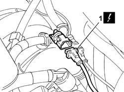
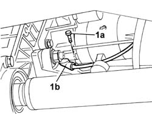

5510C36 RPM SENSOR - R.R.
- Path
- Procedures > 55 ELECTRICAL EQUIPMENT > 5510 ENGINE IGNITION > 5510C COIL, CONTROL UNIT, SENSORS > 5510C36 RPM SENSOR - R.R.
- Kind
- repair procedure (removal / refitting; the operation number is the code)
- Applies to
- engines: 2.0 TB, 2.4 20V; all production periods
- Interactive page
- https://sloeber94.github.io/elrnDB-lThss/en/#/145795
Applies to: engines: 2.0 TB, 2.4 20V; all production periods
 Removing
Removing
 Refitting
Refitting- Position the vehicle on the lift.
- Make sure that the ignition key is in the OFF position, then disconnect the negative battery terminal (-).
See in Op. 7055B54 PROTECTION/GUARD under engine - R.R.
See in Op. 7040D50 ENGINE COMPARTMENT UPPER SOUND INSULATION SHIELD - R.R.
1. Disconnect the rpm sensor electrical connector.
 | Description | Connector |
|---|---|---|
1 | Rpm sensor | K046 |

Applies to: engines: 2.0 TB, 2.4 20V; all production periods
- Raise the vehicle on the lift.
See in Op. 7055B54 PROTECTION/GUARD under engine - R.R.
See in Op. 1076B68 EXHAUST PIPE FLEXIBLE SECTION - R.R.
1. Undo the bolt (1a), release the electrical wiring from the retaining bands on the modular intake chamber and remove the rpm sensor (1b).

Applies to: engines: 2.0 TB, 2.4 20V; all production periods
Refitting
Removing- Position the rpm sensor in its housing and secure it using the bolt.
- Secure the electrical wiring to the modular intake chamber using the retaining bands.
See in Op. 7055B54 PROTECTION/GUARD under engine - R.R.
- Lower the vehicle on the lift.
See in Op. 7040D50 ENGINE COMPARTMENT UPPER SOUND INSULATION SHIELD - R.R.
- Connect the rpm sensor electrical connector.
| Description | Connector |
|---|---|---|
. | Rpm sensor | K046 |
- Connect the negative battery terminal.
- Remove the vehicle from the lift.